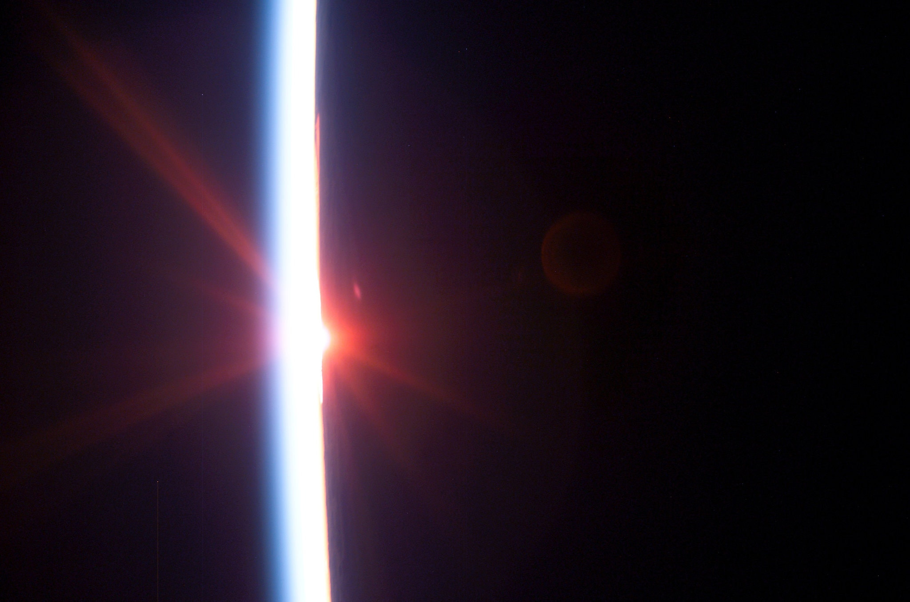

Nocturnal Sun
It was night, but people could see, almost as if it was day. There were no streetlamps, no flood lights, no candles, sun or moon. But they could read documents, make out pebbles on the ground and spot details of landscapes hundreds of yards away. Distant mountains were illuminated. Some called it the nocturnal sun.
Reports of observations like these, dating to ancient Rome, have long perplexed scientists and onlookers. Scientists in Canada may have an answer.
In a study published this week in Geophysical Research Letters, Gordon Shepherd and his colleague Young-Min Cho, atmospheric scientists at York University, explain how waves in Earth’s atmosphere may have made these ancient bright nights possible.
A bright night starts with a dull light called airglow, which is found more than 60 miles above the earth’s surface. Normally, Earth’s atmosphere is made up mainly of nitrogen and oxygen, in their molecular forms. That just means that rather than a single atom of oxygen, for example, two of them are stuck together. But up in those heights, ultraviolet light from the sun separates the atoms in these molecules. At night, when the sun is gone, they come back together, releasing energy as they reunite. This energy is visible as light, and the presence of oxygen, which they focused on in the study, can make it appear green. Scientific instruments are sensitive enough to detect it, but not human eyes — until a bright night, when an unexpected alignment of waves in our upper atmosphere amplify that once invisible airglow, making it much brighter.
Source: NY Times